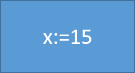
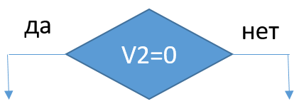
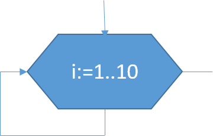

Графическая форма записи алгоритмов представляет собой такую форму, при которой каждая операция заменяется специальным графическим обозначением, а сами эти обозначения соединяются линиями связи в порядке следования операций.
Для графической формы записи используются следующие графические обозначения:
- блок «пуск/останов»
 - блок «Действие»
- блок «Ввод»
- блок «Вывод»
 - блок «Условие»
 - блок «Цикл с параметром»